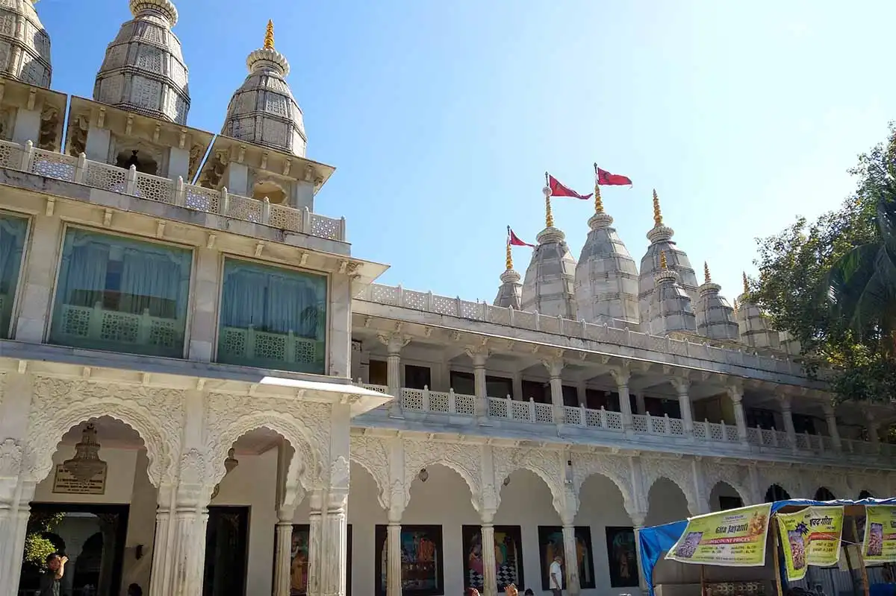
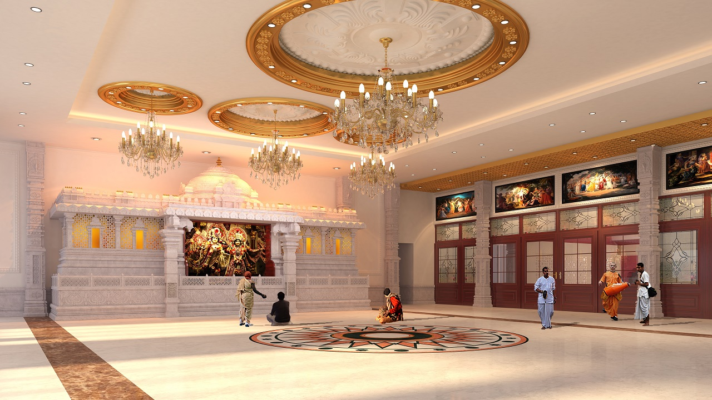
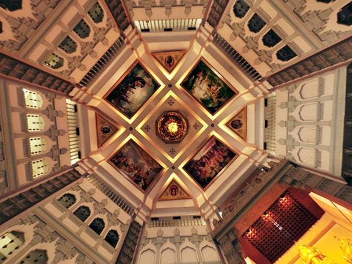
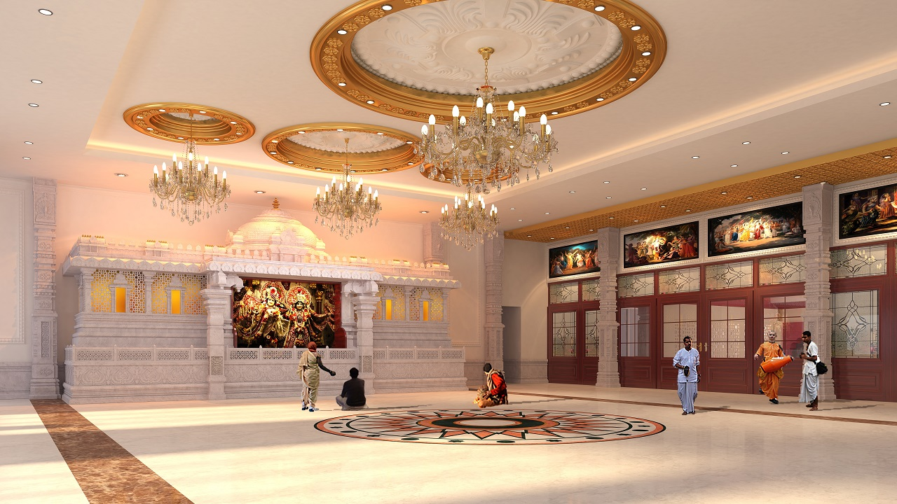
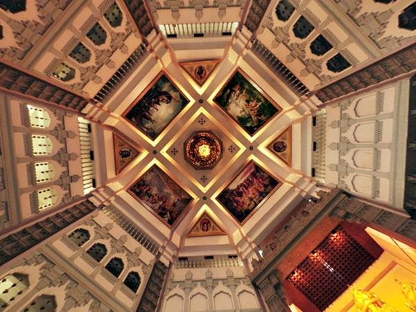
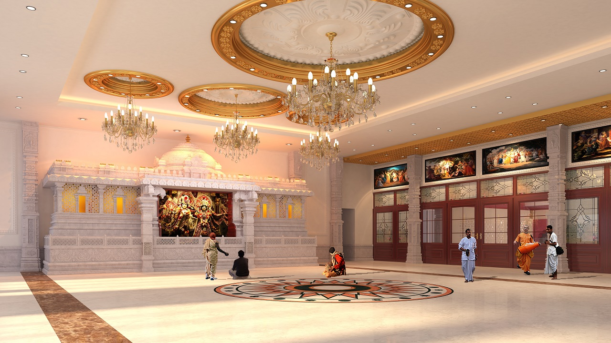
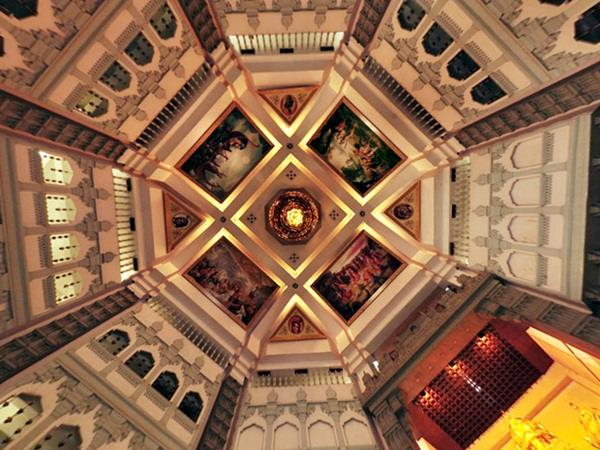

ISKCON Temple, Juhu

 





🛕 Introduction
ISKCON Temple in Juhu is a serene and spiritual space dedicated to Lord Krishna. It’s one of Mumbai’s most visited temples, attracting devotees and tourists alike for prayer, peace, and prasadam.
📜 Highlights
- Magnificent marble temple architecture
- Regular kirtans, aartis, and spiritual lectures
- Govinda’s pure vegetarian restaurant
- Gift shop and spiritual book store
🕒 Best Time to Visit
- Morning aarti (4:30 AM – 5:00 AM)
- Evening aarti and cultural programs
- Festivals like Janmashtami
🙏 Things to Do
- Attend soulful aarti sessions
- Relax in temple gardens
- Eat at the Govinda’s restaurant
- Join spiritual workshops or lectures